Le immagini vengono da una prova con dati di esempio.
Come funziona
Ogni bombola ha la sua scheda: gas, dove si trova, se è piena, vuota o difettosa, e tutti i suoi movimenti. Le schede si aggiornano da sole a ogni documento dell'autista.
- Il titolare usa la pagina gastrace.chainintegrate.it dal computer: vede le bombole e i documenti, gestisce clienti, telefoni e impostazioni.
- L'autista usa l'app GasTrace sul telefono Android: inquadra il codice a barre delle bombole alla consegna e al ritiro.
- Dopo ogni documento parte una mail al cliente e all'azienda.
- I dati sono cifrati: si leggono solo con la password dei dati del titolare. Nessun costo per operazione a carico dell'azienda: lo gestisce ChainIntegrate.
Per il titolare
Primo accesso
Serve il computer su cui hai installato l'estensione ChainIntegrate Account nel browser, con l'account dell'azienda.
- Apri gastrace.chainintegrate.it e premi Accedi con ChainIntegrate Account.
- Si apre la finestra dell'estensione: controlla che il sito sia
gastrace.chainintegrate.ite conferma. - La pagina trova da sola il registro delle bombole dell'azienda. Se ne hai più di uno, scegli quello giusto.
- Scrivi la password dei dati e premi Apri. Ci vuole qualche secondo.
Se la pagina dice che non trova l'estensione, installala da account.chainintegrate.it o apri la pagina con il browser in cui è già installata.
Ogni modifica (un cliente, un telefono, le impostazioni) si conferma nella finestra dell'estensione. Se premi Annulla lì, non cambia niente.
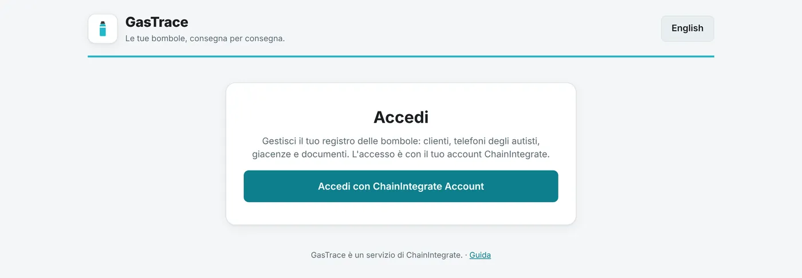
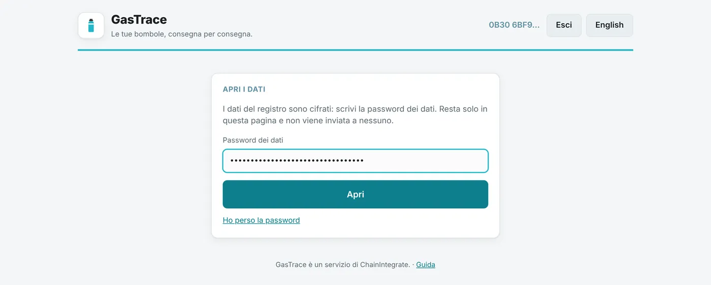
Password dei dati e codice di recupero
- La password dei dati apre i dati delle bombole. Resta nella pagina, non viene inviata a nessuno, e chiudendo la pagina viene dimenticata.
- Il codice di recupero è di 24 parole e ti è stato consegnato una volta sola alla creazione del registro. Tienilo stampato in un posto sicuro, lontano dal computer. Non fotografarlo e non mandarlo per mail.
- Se perdi la password: nella schermata della password premi Ho perso la password, scrivi le 24 parole e scegli una nuova password.
- Per cambiarla: Impostazioni → Cambia password. I telefoni già configurati continuano a funzionare.
Senza password e senza codice di recupero nessuno, nemmeno ChainIntegrate, può più leggere i dati.
Una buona password è una frase di almeno 20 caratteri, oppure almeno 14 caratteri mescolando minuscole, maiuscole, cifre e simboli.
Impostazioni (da fare per prime)
- Nome dell'azienda: compare nell'app e nell'oggetto delle mail. Finché manca, l'app avvisa l'autista.
- Email dell'azienda: le caselle dell'azienda (ufficio, magazzino…) che ricevono una copia di ogni documento, di tutti i clienti. Separale con una virgola.
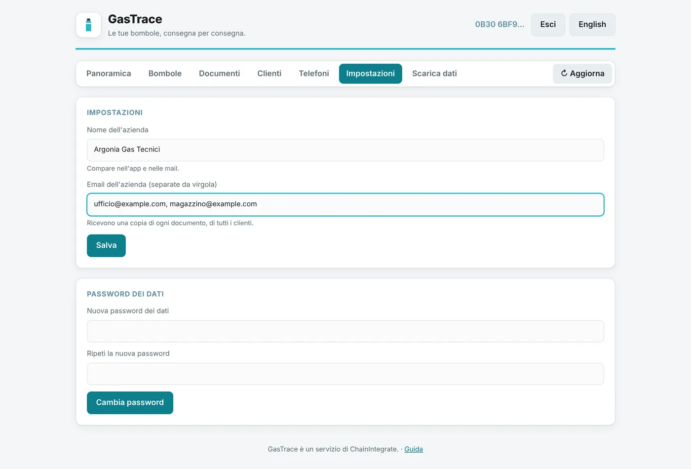
Clienti e centri di ricarica
- Clienti → Aggiungi cliente: nome e mail. Le mail del cliente ricevono ogni documento che lo riguarda.
- Aggiungi centro di ricarica: il centro dove mandate le bombole a ricaricare.
- Modifica cambia nome o mail; Togli lo toglie dall'elenco dell'app, ma i documenti già registrati restano.
L'autista vede l'elenco aggiornato alla prossima apertura dell'app.
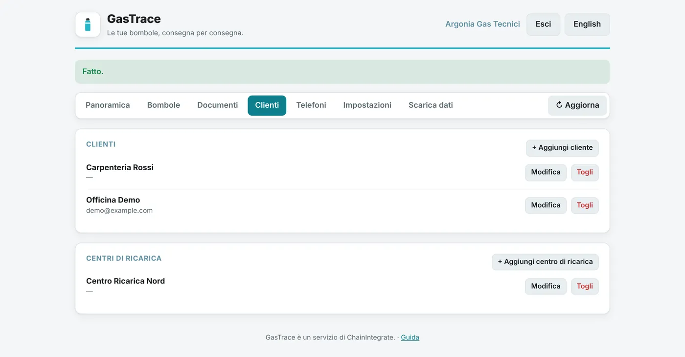
Telefoni degli autisti
Ogni telefono va autorizzato una volta, con l'autista accanto. La sezione Telefoni mostra il codice QR di configurazione.
- L'autista installa l'app (vedi sotto) e la apre: inquadra il QR sullo schermo del computer.
- L'app gli fa creare la chiave del telefono con l'impronta o il PIN, poi mostra il codice del telefono (gruppi di 4 caratteri).
- Tu scrivi quel codice in Autorizza un telefono, premi Autorizza e confermi nell'estensione.
- L'app se ne accorge da sola e chiede la password dei dati: la scrivi tu sul telefono, una volta sola. Il telefono non la conserva.
Revoca un telefono perso, rubato o di un autista che non lavora più con voi: da quel momento non può più registrare niente.
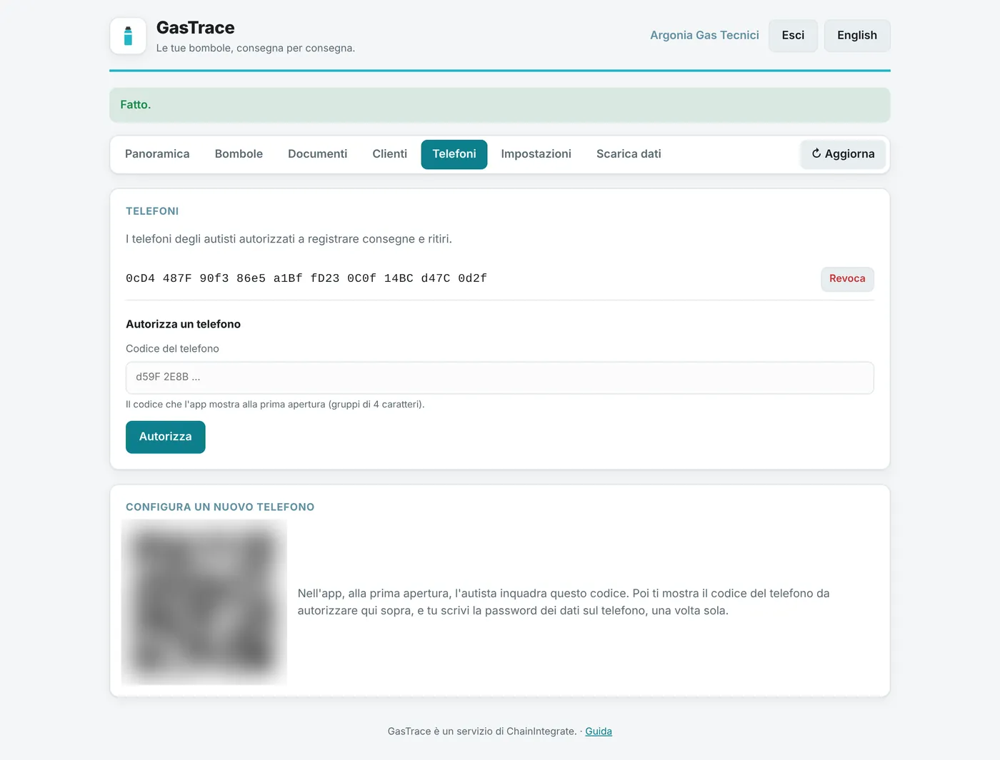
Bombole e documenti
- Panoramica: quante bombole in deposito, dai clienti, in ricarica, difettose; per gas; gli ultimi documenti.
- Bombole: cerca per codice, gas o cliente. Clicca una bombola per vedere tutta la sua storia, movimento per movimento.
- Documenti: DDT, giacenze e documenti di ricarica, con le bombole e le segnalazioni confermate dall'autista.
Aggiorna ricarica i dati dopo un nuovo documento.
Scaricare i dati
In Scarica dati puoi salvare sul computer i dati del registro, in file da aprire con Excel o LibreOffice (doppio clic sul file):
- Bombole: ogni bombola con gas, litri, proprietà, dove si trova, condizione e ultimo movimento;
- Movimenti: una riga per ogni bombola di ogni documento, dalla più vecchia alla più recente;
- Documenti: una riga per documento, con quante bombole consegnate, ritirate, contate o in ricarica;
- Clienti e centri di ricarica: nomi e mail.
I file si creano nella pagina stessa: i dati non passano da nessun server. Il nome del file contiene la data, così puoi tenere una copia al mese.
I file scaricati non sono cifrati: contengono nomi e mail dei clienti. Conservali come gli altri documenti dell'azienda.
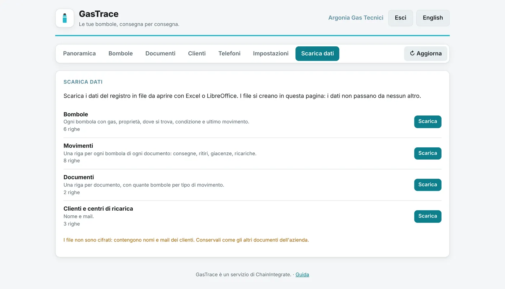
Per l'autista
Installare l'app
L'app GasTrace è per telefoni Android. Non è sul Play Store: si scarica dal sito di GitHub.
- Sul telefono apri l'ultima versione di GasTrace e tocca il file
gastrace-v….apkper scaricarlo. - Apri il file scaricato. La prima volta Android dice che non può installare app da questa fonte: tocca Impostazioni, attiva Consenti da questa fonte, torna indietro e l'installazione prosegue.
- Può comparire Play Protect, che propone di controllare l'app perché non viene dal Play Store: accetta il controllo, oppure tocca Altri dettagli → Installa comunque. È il controllo di Google sulle app che non passano dal suo negozio, non un problema dell'app.
Il telefono deve avere un blocco schermo (impronta, PIN o sequenza): senza, l'app non può proteggere la sua chiave.
Non disinstallare mai l'app e non cancellarne i dati: la chiave del telefono andrebbe persa e il telefono andrebbe configurato di nuovo con il titolare.
Configurare il telefono (una volta, con il titolare)
- Apri GasTrace e tocca Inquadra il codice: inquadra il QR che il titolare ti mostra nella sua pagina.
- Tocca Crea la chiave e conferma con l'impronta o il PIN.
- L'app mostra il codice di questo telefono: dallo al titolare (puoi usare Copia).
- Quando il titolare l'ha autorizzato, l'app chiede la password dei dati: la scrive il titolare.
Da quel momento apri l'app con Sblocca con impronta o PIN.
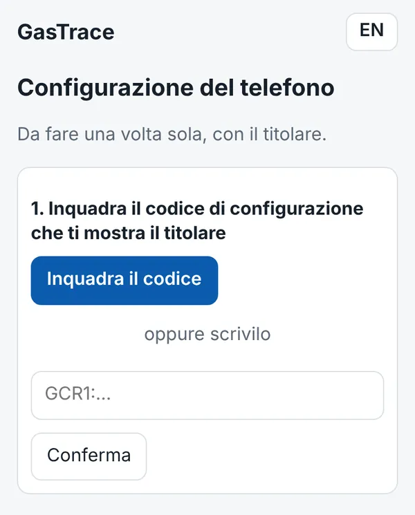
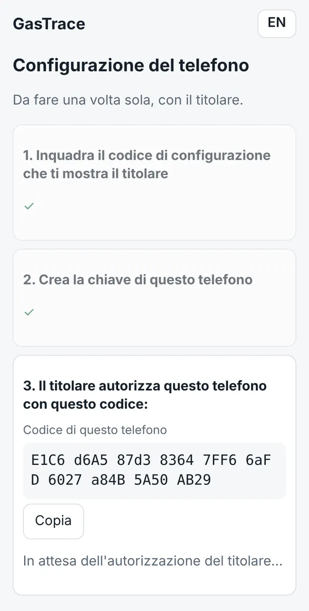
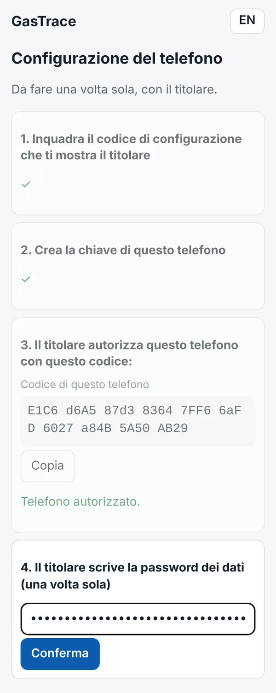
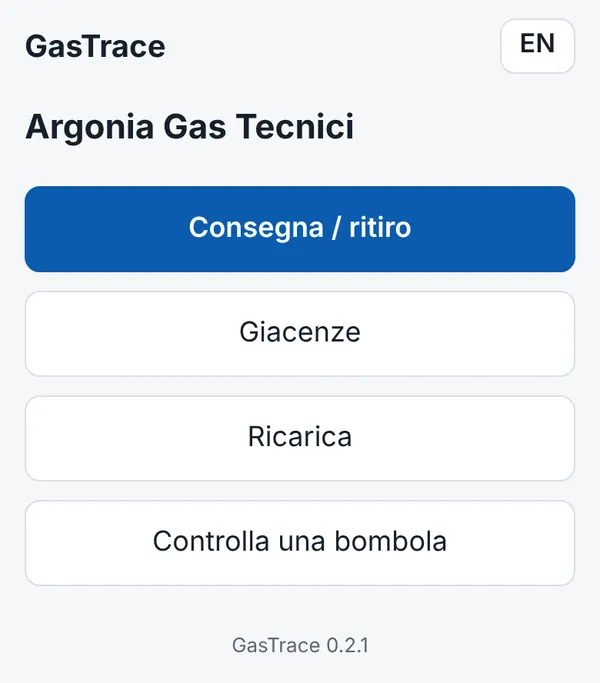
Consegna e ritiro
- Tocca Consegna / ritiro e scegli il cliente.
- Tocca Inquadra bombola per ogni bombola, quelle che lasci e quelle che ritiri. Se il codice non si legge, usa Scrivi il codice.
- L'app propone da sola il movimento:
- una bombola in deposito, o mai vista prima, è una consegna (piena);
- una bombola che era già da questo cliente è un ritiro (vuota; puoi scegliere piena o difettosa).
- Per una bombola nuova scegli il gas (e se vuoi i litri).
- Se compare una segnalazione (per esempio "Risulta presso un altro cliente"), controlla e tocca Confermo le segnalazioni: finiscono anche nella mail.
- Scrivi il numero del DDT, controlla il riepilogo e a chi va la mail (puoi aggiungere un indirizzo), poi Invia e conferma con l'impronta o il PIN.
"Registrato" vuol dire che il documento è salvato; poi l'app dice se la mail è partita.
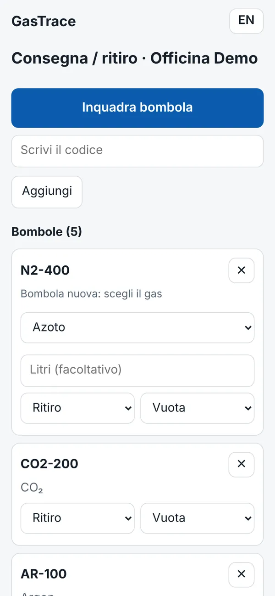
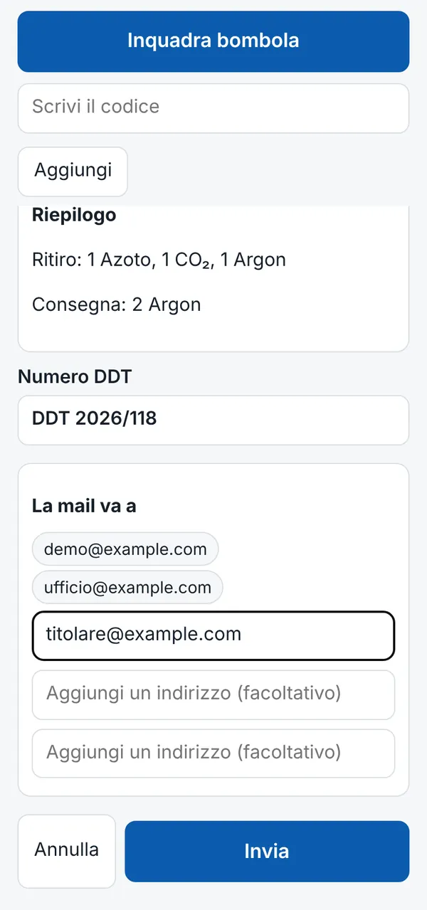
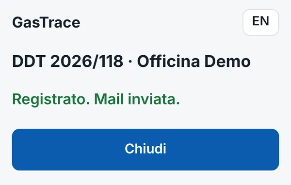
Giacenze
Si usa all'inizio, per registrare le bombole che si trovano già dai clienti o nei centri di ricarica, e ogni volta che serve un conteggio.
- Tocca Giacenze e scegli il cliente o il centro.
- Inquadra tutte le bombole presenti e per quelle nuove scegli il gas.
- Invia. Non serve il numero di documento e non parte nessuna mail, a meno che tu non aggiunga un indirizzo.
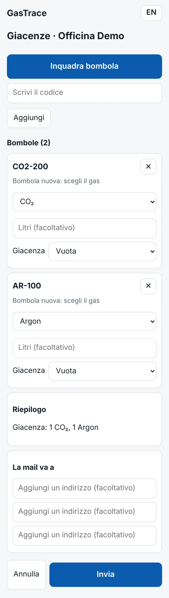
Ricarica
Tocca Ricarica e scegli il centro di ricarica. Inquadra le bombole: quelle in deposito risultano inviate a ricarica, quelle che erano in quel centro risultano rientrate da ricarica. Scrivi il numero del documento e invia.
Controllare una bombola
Controlla una bombola: inquadra il codice e vedi gas, dove si trova, condizione e ultimo movimento. Non registra niente.
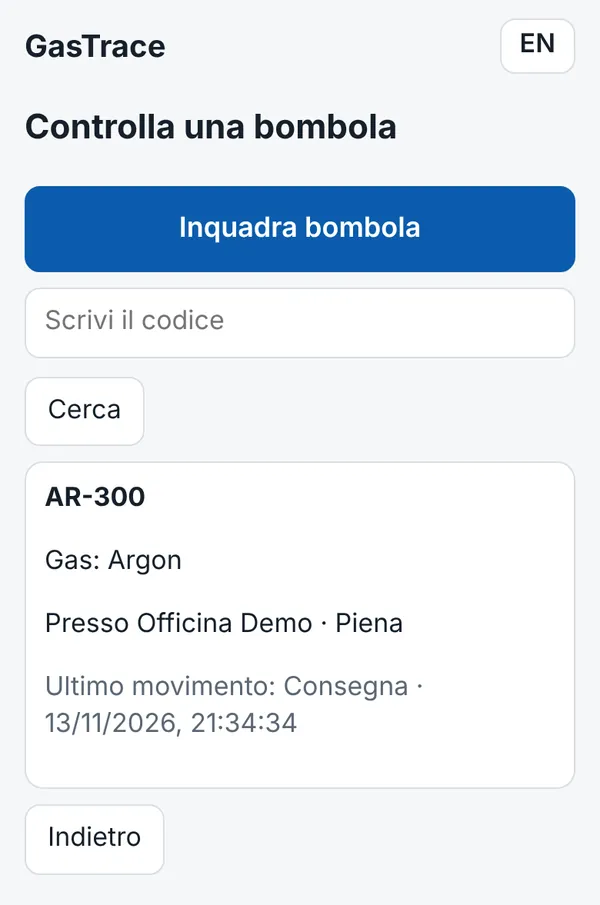
Senza rete: "Da inviare"
Se non c'è segnale, il documento viene salvato sul telefono e parte da solo appena torna la rete. Nella schermata iniziale compare Da inviare (n): lì puoi vederli, mandarli con Invia ora o scartarli.
Se intanto un'altra persona ha registrato una delle stesse bombole, l'app dice "Una bombola è cambiata nel frattempo": rifai il documento.
La mail del documento
Dopo ogni DDT o documento di ricarica parte una mail alle mail del cliente, a quelle dell'azienda e agli indirizzi aggiunti nel documento. Se l'app dice che la mail non è partita, o che non sa se è partita, tocca Manda dal telefono: si apre la tua app di posta con il testo già pronto.
Aggiornare l'app
Quando esce una nuova versione, nella schermata iniziale compare "È disponibile una nuova versione di GasTrace". Tocca Scarica, apri il file scaricato e conferma: la nuova versione si installa sopra quella vecchia e il telefono resta configurato. La versione installata è scritta in fondo alla schermata iniziale.
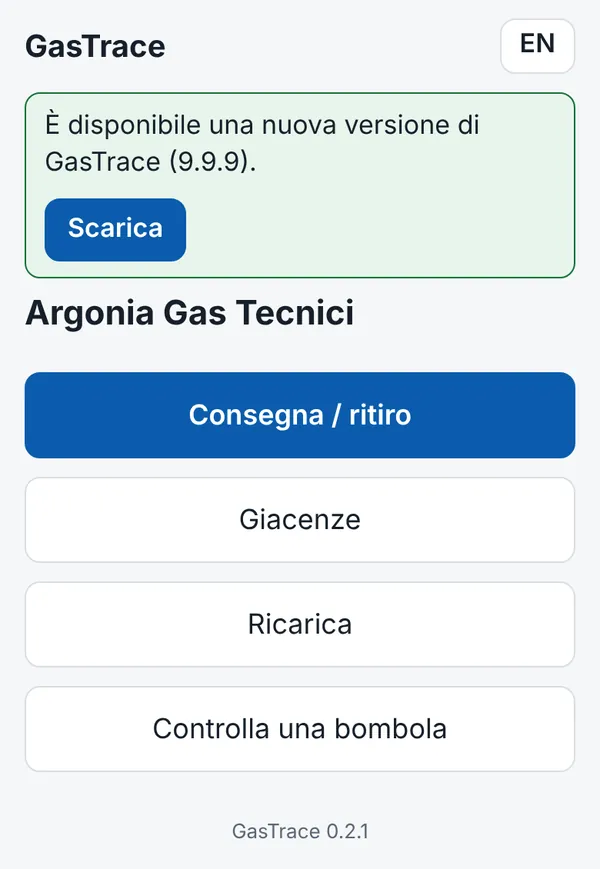
Problemi frequenti
"Una bombola è cambiata nel frattempo"
Qualcuno ha registrato la stessa bombola dopo che l'hai inquadrata. Rifai il documento: l'app ripropone i movimenti aggiornati.
"Questo documento risulta già registrato"
Lo stesso numero di documento è già stato inviato. Controlla in "Da inviare" o chiedi al titolare di guardare in Documenti.
"Questo telefono non è più autorizzato"
Il titolare l'ha revocato. Se è un errore, va configurato di nuovo.
Telefono perso, rubato o cambiato
Il titolare lo revoca subito da Telefoni. Il telefono nuovo si configura da capo, come la prima volta.
L'impronta non va più, o è stato tolto il blocco schermo
Android cancella la chiave dell'app quando si toglie il blocco schermo. Rimetti il blocco schermo e configura di nuovo il telefono con il titolare; il titolare revoca il vecchio codice.
La pagina non trova l'estensione
Apri la pagina nel browser dove è installata ChainIntegrate Account, oppure installala da account.chainintegrate.it.
"Password non corretta"
Controlla maiuscole e tastiera. Se l'hai persa, usa Ho perso la password con il codice di recupero.
Altro
Scrivi a ChainIntegrate indicando cosa stavi facendo e il messaggio che hai visto.